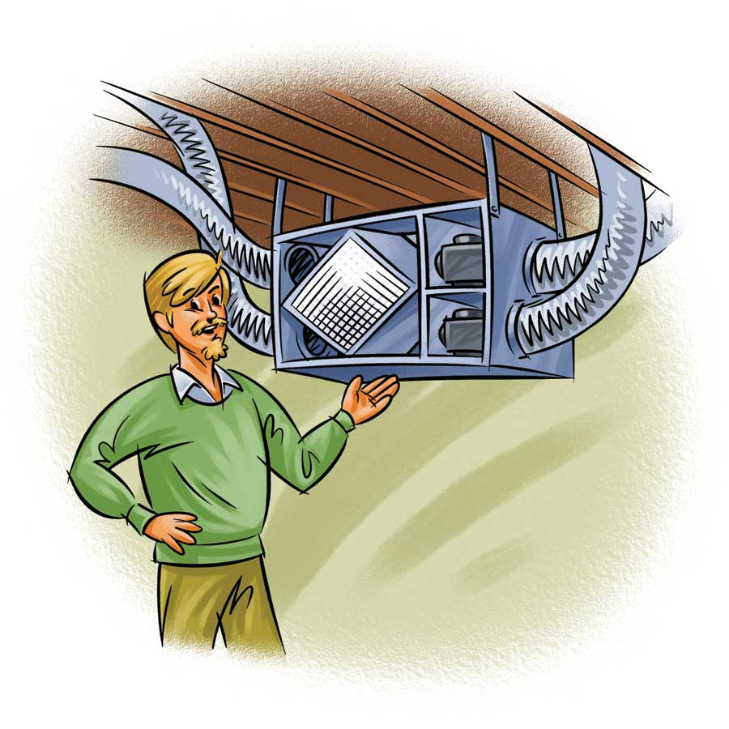
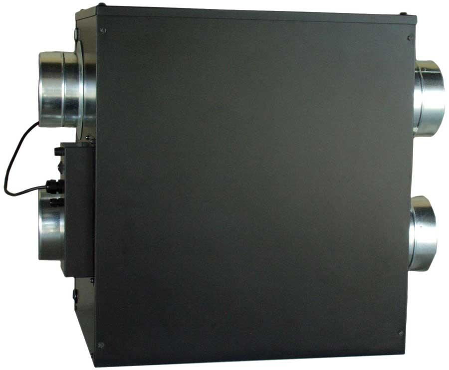
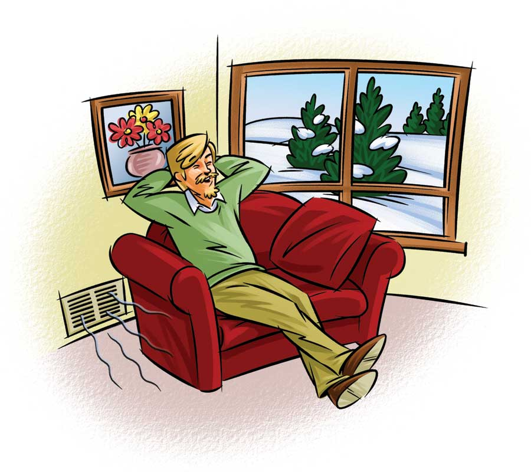
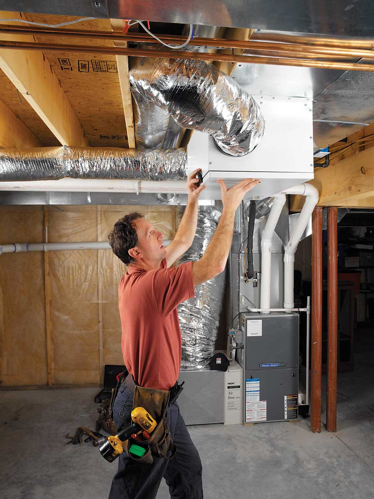

Sealing air leaks and adding insulation are two important ways of conserving energy in your house. But some homes may be so tightly sealed that they don’t allow in enough fresh air for a healthy environment. To allow adequate fresh air into your house (without using extra energy to heat or cool the fresh air) you might need some type of ventilation system. Energy-recovery ventilators, also known as air heat exchangers, are mechanical ventilation systems that remove stale, polluted air from homes and replace it with fresh outdoor air.
To conserve energy, energy-recovery ventilators pass the outgoing warm air from inside the house through an internal component called a heat exchanger. In the heat exchanger, heat from the outgoing air is transferred to the cool incoming air. This exchange (heat recovery) prevents the home’s occupants from being blasted with cold winter air. It also saves considerable energy because the home’s heater doesn’t need to warm the cold incoming air. In the summer, outgoing room air cools the incoming warm air, helping to maintain comfort.
Energy-recovery ventilators can be operated by timers or controlled by humidistats, sensors that detect humidity levels in a home. Energy-recovery ventilators often remove excess humidity, but also can be set to add humidity. They cost about $500 to $1,700 (see “What Will It Cost?”, below).
When researching energy-recovery ventilators for purchase, don’t be confused by the terminology. An energy-recovery ventilator is not the same as a heat-recovery ventilator. In an energy-recovery ventilator, the heat exchanger transfers a certain amount of water vapor - along with heat energy - to the incoming air. A heat-recovery ventilator transfers only heat. Because an energy-recovery ventilator transfers some of the moisture contained in the exhaust air to the usually less humid incoming winter air, the humidity of homes with energy-recovery ventilators tends to stay more constant. This feature also keeps the heat exchanger core warmer, minimizing problems with freezing.
Although you can purchase a small wall- or window-mounted energy-recovery ventilator, most are large units that are suspended from the ceiling - usually in attics, utility rooms, basements or crawl spaces.
Installation is a job for a professional. Energy-recovery ventilators require two connections to the outdoors - one to exhaust stale indoor air and the other to bring in fresh outside air. According to the Sustainable Building Sourcebook, “The inlet and outlet on the building exterior need to be distanced from each other to avoid cross-contamination.” Ideally, they should be located on different sides of the house.
If your home has a central heating and air-conditioning system, an energy-recovery ventilator can be integrated into existing ducts to remove stale indoor air and circulate fresh air to each room. If your home is not equipped with a central air or a forced-air heating system, installation can be considerably more challenging. The installer may need to build chases (channels to transport air) or install ducts to deliver stale air to the energy-recovery ventilator for removal and to distribute fresh air throughout the home.
A cheaper alternative is to have the energy-recovery ventilator ducted to one central spot in the house. For optimal performance, stale air is usually removed from the most humid locations in our homes, such as kitchens and bathrooms.
Some type of ventilation is essential for airtight homes. If your home is new and airtight, or if you’ve spent time and money sealing air leaks in the building envelope, an energy-recovery ventilator may be useful.
How do you know whether an energy-recovery ventilator is suitable for your home? One way is to have a blower door test performed as part of an energy audit. If the air exchange calculated from this analysis is 0.5 air changes per hour (ACH) or less, an energy-recovery ventilator is probably a good idea. Another way to determine if installing an energy-recovery ventilator is worthwhile is to assess how long odors linger in your home. The longer an odor lingers, the more airtight a home is. The more airtight, the more essential it is to create a supply of fresh air.
Installing an energy-recovery ventilator may also be advisable in a house in which the heating and/or cooking equipment is not adequately ventilated, for instance, if there’s no hood over the gas range or if the stove does not vent to the outside. An energy-recovery ventilator may also make sense if your garage is attached to the house and is not adequately vented, a common situation in some older homes that can result in car exhaust fumes entering your home. (To address this, you can also install a simple exhaust fan that is automatically or manually controlled in the garage.)
Installing energy-recovery ventilators may be advised if household chemicals and paints are stored indoors (or in an attached garage or basement) and, of course, if formaldehyde levels are high. Formaldehyde is present in many common household materials, including furniture, kitchen cabinets, some types of flooring and some window treatments. Energy-recovery ventilators are also a good idea if radon levels are high. Note, however, if radon levels are 15 pCi/liter (picocuries per liter) or higher, an energy-recovery ventilator will not generally be adequate to reduce radon sufficiently.
Energy-recovery ventilators work best if there’s a supply and return duct for each bedroom and for all common living areas, such as family rooms and kitchens. For optimal performance, duct runs should be as short and straight as possible. Duct size is important to allow air to flow freely through the system.
If you live in a cold climate, choose an energy-recovery ventilator equipped with a device to prevent freezing and frost formation. Frost forms as cold supply air (incoming) flows through the heat exchanger. Frost buildup reduces the system’s efficiency and can damage the unit.
Energy-recovery ventilators need to be cleaned periodically to ensure adequate performance and to prevent the build-up of mold and bacteria in the heat exchanger. It’s good to have a professional service the unit annually.
Homeowners can perform other maintenance, such as cleaning or replacing filters every couple of months and cleaning outside screens and drains. Check the ventilator’s manual for instructions.
Clean air is essential to good health - not just outdoor air, but the air we breathe in our homes. How do we ensure clean indoor air? The first and most important approach is prevention - banning or reducing smoking and the use of harmful chemicals, such as cleaning agents, perfumes, hair sprays and nail polish, as well as building materials that produce potentially harmful fumes. We can also reduce exposure to these hazards by ventilating spaces where chemical products are used - for example, running a bathroom fan or opening the window when applying hair spray.
Many toxic products can be replaced by healthy ones. You can choose natural fiber shower curtains instead of vinyl. Install wood floors, wool carpeting, recycled ceramic tile, cork flooring, natural linoleum or green laminate flooring instead of conventional carpeting or vinyl flooring. You can also use natural cleaning agents and low- or no-VOC paints, stains and finishes. Radon mitigation efforts are another important component in preventing indoor air pollution.
Carbon monoxide is released by woodstoves and various combustion appliances, such as gas-fired furnaces, fireplaces, ovens, stoves and water heaters. Burning candles also causes indoor air pollution. Some pollutants come in from outdoors - chemicals emitted by cars, lawn mowers, factories and power plants. Naturally occurring allergens, such as pollen, can also enter our homes from outside.
Indoor air pollution is responsible for many illnesses, including allergies, asthma and flu-like symptoms that occur in some individuals if they’re exposed to molds. Some pollutants are irritants; others contribute to more serious illnesses, such as emphysema and lung cancer. Reducing indoor air pollution helps create a healthy environment for children and the elderly, who are typically more sensitive to pollutants.
The Environmental Protection Agency provides great information on indoor air quality.
Energy-recovery ventilators are a well-developed technology. Their prices range from about $500 to $1,700, not including installation. Energy-recovery ventilator systems typically cost more to install than other ventilation systems - those that simply bring fresh air into a home through filters and pump stale air out without recovering heat.
Energy-recovery ventilators precool or preheat (depending on the season) the incoming air. This reduces the demand on a home’s heating and cooling system and can save energy, depending on your climate and how airtight your home is.
Most energy-recovery ventilation systems on the market today recover about 70 to 80 percent of the energy in the outgoing air, transferring it to the incoming air. According to the U.S. Department of Energy, energy-recovery ventilators are “most cost-effective in climates with extreme winters or summers, and where fuel costs are high. In mild climates, the cost of the additional electricity consumed by the system fans may exceed the energy savings from not having to condition the supply air.” The other factor to consider is the health benefit of freshening your indoor air.
Improve your home’s air quality by using true high-efficiency particulate air (HEPA) filters for your furnace and air-conditioning system. HEPA filters diminish the circulation of allergens and dust by trapping 99.97 percent of particles, versus the 10 to 40 percent trapped by regular fiberglass filters. (So-called “HEPA-type” filters may be far less effective.)
|
 KEITH WARD An energy-recovery ventilator provides fresh indoor air and helps control humidity levels while conserving energy. |
 ULTIMATEAIR INC. In the heat exchanger, heat from the outgoing air is transferred to the cool incoming air. |
 KEITH WARD Clean air is essential to good health - not just outdoor air, but the air we breathe in our homes. An energy-recovery ventilator can improve indoor air quality in tightly sealed houses. |
|
 RENEWAIRE VENTILATION Installing an energy-recovery ventilator is a job for a professional, but if your home has a central heating and air conditioning system, installation will be less complicated. |
|
|